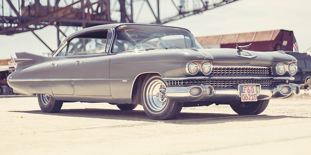
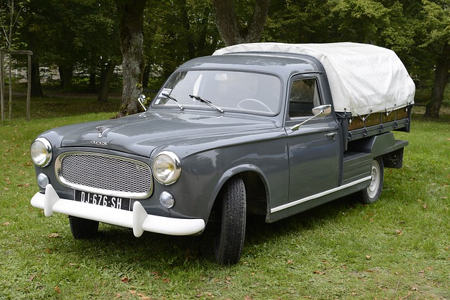

História do Automóvel
O primeiro veiculo motorizado a ser produzido com propósito comercial foi um carro com apenas três rodas
Em 1982, Henry Ford produziu seu primeiro Ford na América do Norte
No ano de 1904, surgiu o primeiro Rolls Royce com um radiador que não passaria por nenhuma transformação
Após primeira guerra mundial, os fabricantes partiram para uma linha de produção mais barata: os automóveis seriam mais compactados e fabricados em serie
Este sistema de produção ficou conhecido como Fordismo
No caso do Brasil e também em outros paises da América Latina, esta evolução automotora chegou somente após a segunda guerra mundial
Foi somente na exposição Universal de 1889, realizada em Paris, que o automóvel foi divulgado em nivel mundial. Antes disso, pouca pessoas conheciam a invenção e o interesse era pequeno e restrito
Nos primeiros anos do século XX, a maioria dos automóveis produzidos era movida a energia elétrica ou a vapor

Foi somente na década de 1920 que os automóveis com motor a gasolina passaram a ter preferência dos consumidores

o primeiro automóvel chegou ao Brazil no ano de 1983